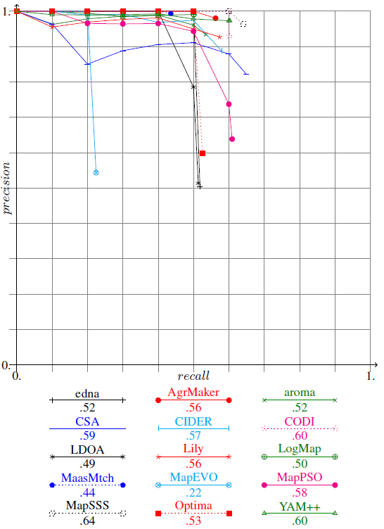
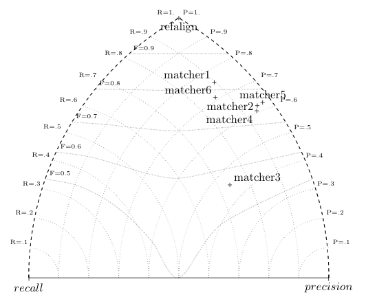
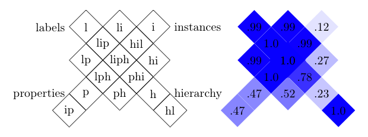

Alignment API: Evaluating alignments
A good reason for having a separate Alignment format is to be able
to compare the alignments provided by different matching algorithms. They can be compared
with each other or against a ``correct'' alignment.
The alignment API defines an Evaluator interface which can
be used for developing different tools. This interface has
an eval method which takes two alignments as input and which
evaluates the second one with respect to the first one which is taken
as a reference alignments.
This allows for implementing various measures and displaying various
reports. Some examples are given below.
Evaluating
There is a command line utility
(fr.inrialpes.exmo.align.cli.EvalAlign) allowing for taking
advantage of evaluators. It is called in the following way:
$ java -cp lib/procalign.jar fr.inrialpes.exmo.align.cli.EvalAlign file://result/align1.owl file://result/align2.owl
For instance ($CWD is the current directory):
$ java -cp lib/procalign.jar fr.inrialpes.exmo.align.cli.EvalAlign -i fr.inrialpes.exmo.align.impl.eval.PRecEvaluator file://$CWD/aligns/bibref.owl file://$CWD/aligns/EditDistName.owl
would yield:
<?xml version='1.0' encoding='utf-8' standalone='yes'?>
<rdf:RDF xmlns:rdf='http://www.w3.org/1999/02/22-rdf-syntax-ns#'
xmlns:map='http://www.atl.external.lmco.com/projects/ontology/ResultsOntology.n3#'>
<map:output rdf:about=''>
<map:precision>0.6976744186046512</map:precision>
<map:recall>0.9375</map:recall>
<fallout>0.3023255813953488</fallout>
<map:fMeasure>0.8000000000000002</map:fMeasure>
<map:oMeasure>0.53125</map:oMeasure>
<result>1.34375</result>
</map:output>
</rdf:RDF>
The default format is the format developed at Lockheed
extended with a few attributes, but any other format could have been generated.
See below for more graphical formats.
The option of EvalAlign are:
$ java -cp lib/procalign.jar fr.inrialpes.exmo.align.cli.EvalAlign --help
usage: EvalAlign [options] file1 file2
options are:
--debug[=n] -d [n] Report debug info at level n
--impl=className -i classname Use the given Evaluator implementation.
--output=filename -o filename Output the result in filename
--help -h Print this message
Alignment API implementation 4.3 (1698M) ($Id: eval.html 1796 2013-01-01 14:23:21Z euzenat $)
The -i switch enables changing the evaluator to be used (by
default, PRecEvaluator is used).
Built-in evaluators
The Alignment API offers the Evaluator interface for
implementing evaluation measures of alignments. It takes two
alignments and evaluates the second with respect to the first one (reference).
There are already some implementations available in the Alignment API implementation:
- PRecEvaluator
- implements a classical precision/recall/fallout evaluation as well as the
derived measures introduced in [Do2002a]. Precision is the
ratio between true positive and all aligned objects; Recall is the ratio between the true positive and all
the correspondences that should have been found. It also provides
derived measures (F-measure, overall, noise, etc.).
- ExtPRecEvaluator
- implements a relaxed precision and recall as defined by Ehrig and Euzenat in 2005. This provides higher values for precision and recall based on the proximity of obtained results with expected results. There are three flavours of relaxed measures: symmetric, effort-based and oriented.
- SemPRecEvaluator
- implements the semantic
precision and recall proposed by Euzenat in 2007. This
computation may be long and requires the use of an OWL reasonner
such as Pellet.
- WeightedPREvaluator
- computes the classical
precision and recall measures weighted by the confidence measures
provided in the Alignements.
- SymMeanEvaluator
- implements a weighted symmetric difference between the entities that are in one alignment and those common to both alignments
(missing correspondences count for 0., others weight 1. complemented by the difference between their strengths).
This is thus a measure for the similarity of two alignments.
The result is here split between the kinds of entity considered (Class/Property/Individual).
- DiffEvaluator
- computes the difference between two
alignments classifying the correspondences in three categories
(true positive, false positive and false negative). This
evaluator does not really compute a measure (it could be used for
computing precision and recall). It is used by the Alignment server
Requirements
The class path requirements apply to all command-line primitive below
as well as the Alignment server.
Batch evaluation
There is another utility (GroupEval) which allows to
implement batch evaluation. It starts with a directory containing a
set of subdirectories (like the output of the
batch GroupAlign command). Each subdirectory contains a reference alignment (usually called refalign.rdf) and a set of alignments (named matcher1.rdf... matcher3.rdf).
Invoking GroupEval with the list of files to consider (-l argument) and the set of evaluation results to provide (-f argument with profm, for precision, recall, overall, fallout, f-measure as possible measures)
returns:
$ java -cp ../lib/procalign.jar fr.inrialpes.exmo.align.cli.GroupEval -l "refalign,matcher1,matcher2,matcher3" -f "pr" -c
| algo |
refalign |
matcher1 |
matcher2 |
matcher3 |
|---|
| test |
Prec. |
Rec. |
Prec. |
Rec. |
Prec. |
Rec. |
Prec. |
Rec. |
| ... |
| 265-8 |
1.00 |
1.00 |
0.22 |
0.25 |
1.00 |
0.33 |
0.87 |
0.31 |
| 266 |
1.00 |
1.00 |
0.00 |
0.00 |
1.00 |
0.00 |
1.00 |
0.00 |
| 266-2 |
1.00 |
1.00 |
0.81 |
0.81 |
1.00 |
0.81 |
0.94 |
0.82 |
| 266-4 |
1.00 |
1.00 |
0.62 |
0.62 |
1.00 |
0.62 |
0.85 |
0.64 |
| 266-6 |
1.00 |
1.00 |
0.42 |
0.42 |
1.00 |
0.42 |
0.85 |
0.48 |
| 266-8 |
1.00 |
1.00 |
0.23 |
0.23 |
1.00 |
0.23 |
0.81 |
0.30 |
| H-mean | 1.00 |
1.00 |
0.50 |
0.52 |
0.98 |
0.56 |
0.93 |
0.53 |
HTML Table of precision and recall results generated by GroupEval.
GroupEval accepts the following arguments:
$ java -cp lib/procalign.jar fr.inrialpes.exmo.align.cli.GroupEval --help
usage: GroupEval [options]
options are:
--format=prfot -r prfot Specifies the output order (precision/recall/f-measure/overall/time)
--output=filename -o filename Specifies a file to which the output will go
--reference=filename -r filename Specifies the name of the reference alignment file (default: refalign.rdf)
--type=html|xml|tex|ascii|triangle -t html|xml|tex|ascii Specifies the output format
--list=algo1,...,algon -l algo1,...,algon Sequence of the filenames to consider
--color=color -c color Specifies if the output must color even lines of the output
--debug[=n] -d [n] Report debug info at level n
--help -h Print this message
Alignment API implementation 4.3 (1698M) ($Id: eval.html 1796 2013-01-01 14:23:21Z euzenat $)
Similar commands exists for different Evaluator
(unfortunately we did not found time to correctly unify this, but this
could be done). These are:
- ExtGroupEval
- for ExtPRecEvaluator
- WGroupEval
- for WeightedPREvaluator
Plot functions
There are also two classes able to plot the result of several matching systems. The first ploting function is GenPlot.
It generates the precision/recall graphs as gnu-plot files and generates a Latex file corresponding to Figure~\ref{fig:prgraph}.
$ java -cp ../lib/procalign.jar fr.inrialpes.exmo.align.cli.GenPlot -l "refalign,edna,ASMOV..." -t tex -o prgraph.tex

Example of precision/recall graphs in LaTeX, as plotted by GenPlot.
GenPlot accepts the following arguments:
$ java -cp /Java/alignapi/lib/procalign.jar fr.inrialpes.exmo.align.cli.GenPlot --help
usage: GenPlot [options]
options are:
--type=tsv|tex|html(|xml) -t tsv|tex|html(|xml) Specifies the output format
--graph=class -g class Specifies the class of Evaluator to be used
--evaluator=class -e class Specifies the class of GraphEvaluator (plotter) to be used
--list=algo1,...,algon -l algo1,...,algon Sequence of the filenames to consider
--debug[=n] -d [n] Report debug info at level n
--help -h Print this message
The -t switch specifies the type output.
The plots are provided for PGF LaTeX as gnuplot tables.
The HTML plot uses the Google chart API.
The CSV version should help importing in a spreadsheet.
The -e switch specifies the evaluator that is supposed to be
used but currently has no effect.
The -g switch uses an extension of the GraphEvaluator
abstract class, i.e., an evaluator which computes a list
of Pair objects representing points on a plot. Such lists
of pairs are used by the GenPlot command line utility. This
abstract class does not implements the Evaluator interface
but its implementation may use such evaluators. This is the case of
the available:
- PRGraphEvaluator
- for plotting precision-at-n graphs or precision recall graphs.
This class implements an accurate computation of the values. It also
computes MAP (mean average precision).
- AveragePRGraphEvaluator
- is also for plotting
precision-at-n graphs with the classical way of doing it:
interpolating missing values and forcing monotonic behaviour. It
also computes the MAP.
- ROCCurveEvaluator
- computes the Receiver operating
characteristic or ROC curves. It also computes the area under
curves (AUC).
- ThresholdGraphEvaluator
- computes the graph
representing a measure (precision, recall, F-measure) in function of
a confidence measure threshold. For each threshold, and for each
alignment, the value of the measure is computed.
A simpler representation places each system in a plane so that their position corresponds to their distance from 0 precision and 0 recall.
This graphic representation is obtained through the GroupEval
class by generating a Latex file corresponding in the following figure.
$ java -cp ../lib/procalign.jar fr.inrialpes.exmo.align.cli.GroupEval -t triangle -l "refalign,matcher1,matcher2,..." > triangle.tex

Another representation of precision and recall generated by GroupEval: the closer to the top, the
better.
The display below synthesises the results of a matchers by aggregating
in one cell a group of tests in which the ontologies to compare share
a common set of characteristics (namely that the same set of features
has been altered).
Each diamond shaped cell corresponds to the
availability of some features in the test (l=label and comments,
p=properties, i=instances, h=hierarchy).
Each cell is presented with a color representing the
average of the F-measure in each of these tests. The darker the cell,
the better the algorithm. These diagrams are topologically correct,
i.e., if a cell touches another cell on one side, they differ from
only one 'feature', but not complete, i.e., it is not possible to
present all these connections in a planar way.
This graphic representation is obtained through the GroupOutput
class by generating a Latex file corresponding in the following figure.
$ java -cp ../lib/procalign.jar fr.inrialpes.exmo.align.cli.GroupOutput -v -c -m f -l "refalign,matcher1,matcher2,..." > losanges.tex

Matcher performance display by GroupOutput on a grid preserving as much as possible
the topology of tests.
Implementing and extending the API
Creating new evaluators requires to implement the Evaluator interface.
The implementation of the API provides a fr.inrialpes.exmo.align.impl.BasicEvaluator which
implements an abstract container for the evaluation (it has no eval method).
The BasicEvaluator defines the storage
sructures for alignment, but that is all.
Implementing a particular evaluator thus consists in creating a new subclass of
BasicEvaluator and implementing its eval method that will compare
two alignments (the first one can be considered as the reference
alignment).
Adding new evaluations methods amounts to create a
new Evaluator
class implementing the interface. Generally, this can extend the
proposed BasicEvaluator
class.
http://alignapi.gforge.inria.fr/eval.html
$Id: eval.html 1796 2013-01-01 14:23:21Z euzenat $